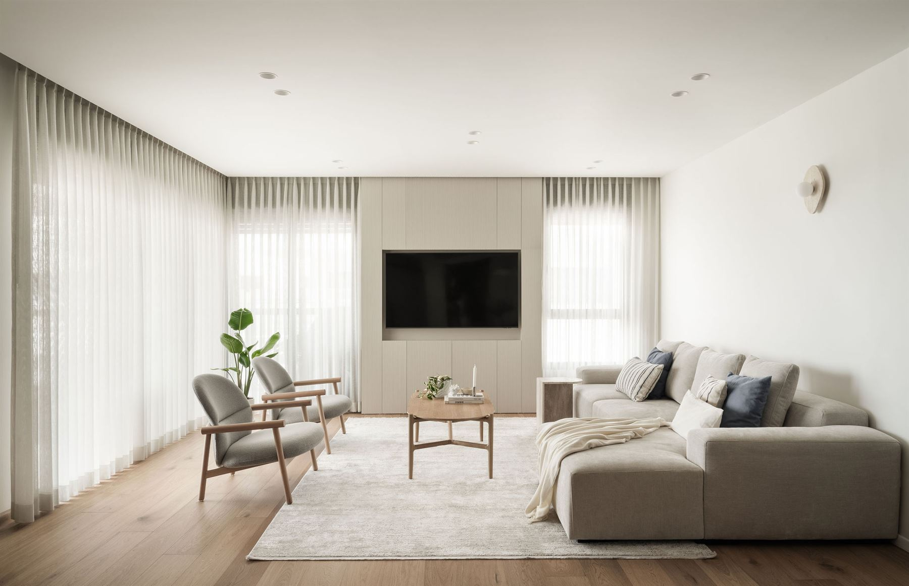

תכנון הדירה והשינויים
לפני שמחליטים מה לשנות, צריך להבין מה באמת נכון עבורכם.
נבחן את תוכנית הדירה, נלמד את הצרכים ואת אורח החיים שלכם, ונבדוק איך אפשר לנצל את החללים בצורה חכמה יותר. נכין חלופות להעמדת הריהוט והחללים, נסמן שינויים רלוונטיים ונצייד אתכם בהנחיות להמשך ההתנהלות מול מתאמת השינויים.
כדי שתדעו מה אתם רוצים לשנות, ובעיקר למה.